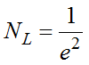
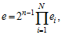
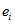

Точное определение количества выбранных пар исходных текстов, требуемых для проведения криптоанализа, является достаточно сложной задачей. Однако существует хорошее правило аппроксимации числа известных открытых текстов, соответствующих им шифртекстов, требуемых для анализа при опробовании различных значений ключа:
,
где e − смещение вероятности выполнения линейного выражения R-1 раундов алгоритма шифрования с числом раундов равным R.
Смещение вероятности выполнения линейного выражения, согласно лемме о набегании, вычисляется как

где N – количество активных (входящих в состав дифференциальной модели) SBox, смещение вероятности выполнения которых от 0,5 равно .
Элементами, существенно затрудняющими линейный криптоанализ (как и дифференциальный), являются хорошо спроектированные линейные (перемешивающие) преобразования, например, арифметические операции над числами большой размерности (32 бита и более), которые приводят к резкому увеличению количества активных подстановок в линейной модели и, следовательно, увеличение сложности атаки. Также для обеспечения стойкости блочных шифров к линейному криптоанализу необходимо улучшать линейные свойства подстановок (т. е. минимизировать вероятности линейных выражений) или использовать подстановки большой размерности. Еще одним методом защиты блочного шифра от линейного криптоанализа является начальное и конечное преобразование, которое должно работать c блоками данных большого размера (64 бита) с помощью операций, не допускающих частичного перебора значений, зависящих от ключа, что делает невозможным поиск части подключа. В простейшем случае это может быть пара операций умножения и деления в поле 264. При этом необходимо помнить, что для биективности такой пары операций множитель должен быть нечетным. Это не позволит выполнить частичное расшифрование последнего раунда, и, таким образом, не даст провести криптоанализ.
Современные блочные алгоритмы шифрования (AES) используют для реализации линейного преобразования коды с максимальным расстоянием Хэмминга (MDS), что гарантирует максимальное количество линейно активных подстановок в каждых двух последующих раундах, которое будет равно кодовому расстоянию [10].